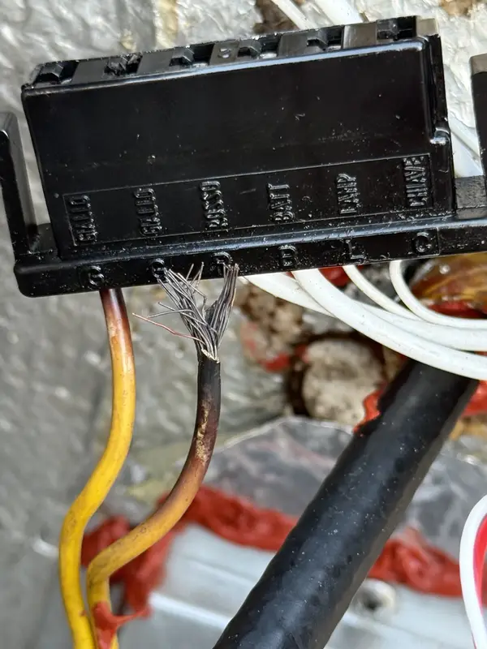
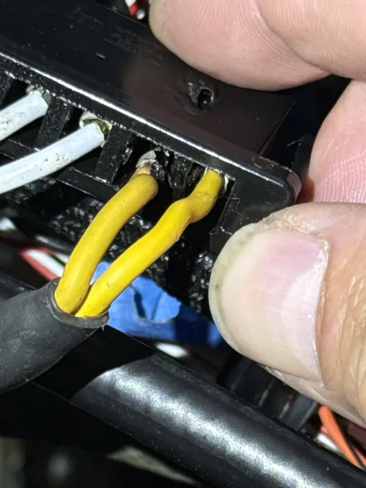
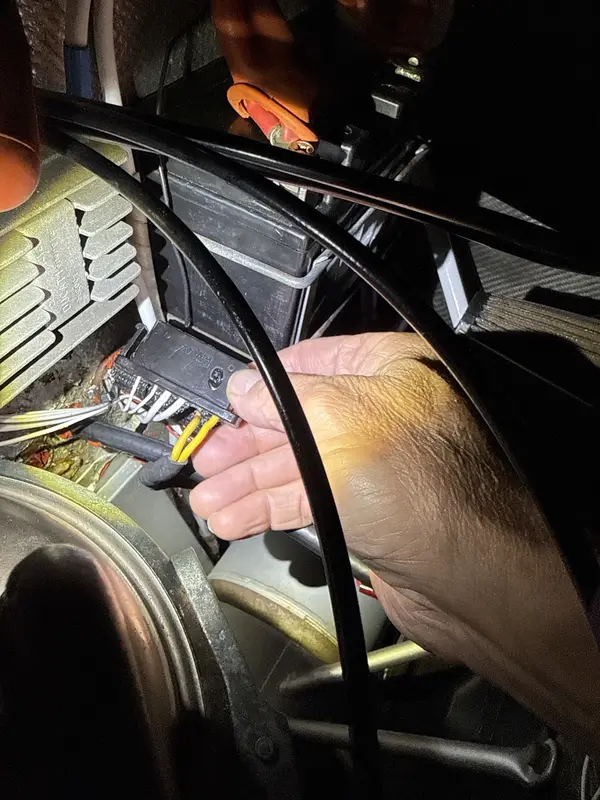
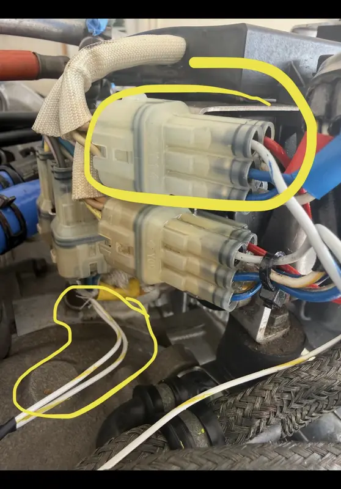
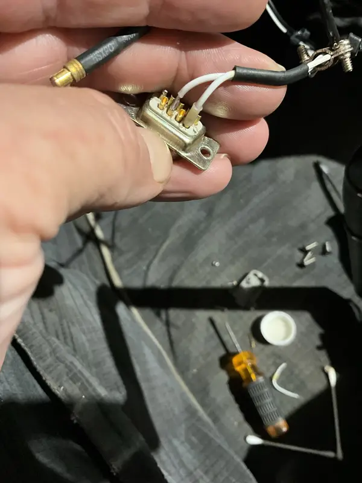

Ignition / ECU / Electrical
ROTAX Ignition, ECU, EMS & Electrical Support
This page is for ROTAX rough running, hard starts, excessive ignition drop, ECU/EMS warnings, sensor faults, or charging-system concerns.
What You May Notice
Electrical Symptoms Can Be Intermittent and Misleading.
- ROTAX 912 rough running or hard starting
- Excessive ignition drop
- ECU or EMS warning messages
- Sensor faults or charging issues
- Heat-related changes in behavior
What It Can Involve
Evidence Comes Before Diagnosis.
- Ignition modules, plugs, leads, and grounds
- ECU/EMS inputs and fault indications
- Sensors, charging system, and wiring condition
- Fuel-system context that mimics ignition issues
- Recent maintenance or installation details
Electrical Fault Evidence
Find the Failed Connection, Not Just the Warning It Created.
Heat damage, weak terminations, connector condition, routing, and intermittent contact can produce symptoms that look like a module or sensor failure. The installed evidence controls the next step.





Electrical Review Focus
Intermittent Faults Need a Timeline.
Ignition, ECU, EMS, sensor, and charging concerns should be described by when they appear, what warning text is shown, what RPM and temperature were involved, and whether the behavior changes with heat, vibration, battery state, or recent maintenance. Intermittent electrical symptoms are easy to flatten into one label when the timeline is missing.
System Context
Wiring and Fuel Clues Can Overlap.
Plugs, leads, grounds, connectors, charging output, sensor signals, fuel delivery, and installation details can create similar owner reports. The review keeps evidence from the panel, records, and operating behavior separated until the next maintenance step is defensible.
What Information Helps First
Send Symptom Data and Fault Context.
Start With the Facts
Send the Warnings, Operating Condition, and Recent Maintenance.
Intermittent ignition, ECU, and electrical symptoms are easiest to control when the aircraft, warning behavior, operating condition, and recent maintenance history are captured first.
Send Aircraft Details